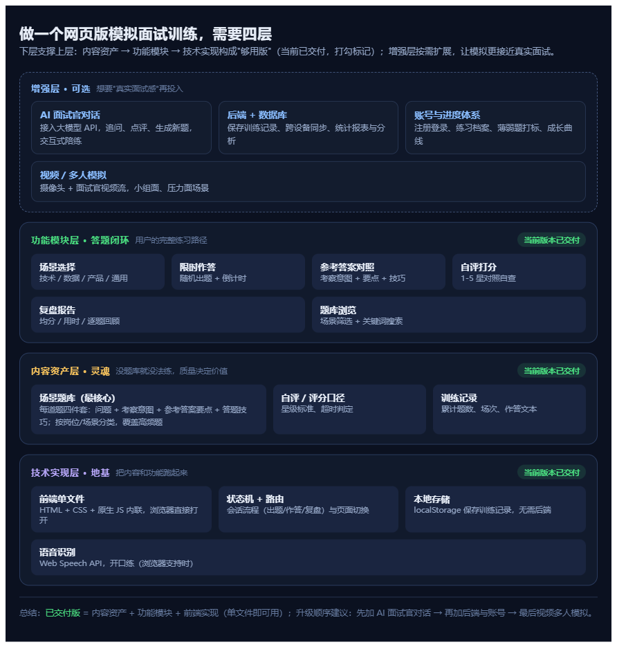

📐
产品蓝图
做一个成熟的模拟面试产品需要哪些板块？本文档梳理 5 大核心板块、技术架构分层与内容运营要点，并标注当前版本的「已交付」与「增强层」。
🧭
阅读指引
自上而下：板块 1-5 是产品地图 → 技术架构四层自下而上支撑 → 内容与运营是灵魂 → 商业化是可选方向。
📐 产品蓝图 · Web 版模拟面试训练
做一个成熟的模拟面试产品
需要哪些板块？
本文档梳理了成熟模拟面试产品的 5 大核心板块、技术架构分层与内容运营要点，并结合我们当前版本标注了「已交付」与「增强层」。
内容资产层 · 已交付
功能模块层 · 已交付
技术实现层 · 已交付
AI 能力层 · 已交付
增强层 · 按需扩展

📐 四层产品架构图（见本地 architecture.png）
1
账号与用户体系
让训练有身份、有档案
🔐
注册 / 登录
手机号/邮箱验证码登录、微信扫码登录（成熟产品必备）。我们目前支持昵称一键登录 + 本地验证码。
已交付基础版👤
个人中心
头像上传、基础信息（学历、目标岗位、工作年限）、简历档案。当前版本支持头像 + 背景色自定义 + 简历文本粘贴 / .txt·.md 上传（AI 解析后定制出题，按用户持久化）。
已交付基础版📊
数据看板
历史面试记录、能力雷达图（表达/逻辑/专业）、成就徽章墙。当前版本有累计场次、平均自评、13 个成就。
已交付基础版
2
模拟面试核心区
产品的灵魂，用户停留时间最长的地方
🎯
面试模式选择
文字模式（打字输入）、语音模式（录音 + 自动转写）、视频模式（进阶，摄像头录制 + 微表情分析）。
增强层⚙️
面试配置
题量、面试类型（技术面/HR 面/压力面）、难度（初/中/高）、计时器开关。
已交付🎤
沉浸式答题
逐题展示、语音朗读（TTS）、倒计时提醒、答题卡草稿区。当前版本支持语音作答（Web Speech API）。
已交付📋
复盘报告
逐题回顾、AI 智能打分与点评、参考答案解析。当前版本有结构化 AI 评分（5 维度雷达图）+ 教练点评（标注 AI 评审官 / 本地估算来源）+ 逐题复盘与改进建议 + 薄弱点一键沉淀错题本 + 报告导出打印。
已交付
3
智能 AI 助手（核心壁垒）
差异化竞争力：大模型 API 接入，未配置时本地智能模拟兜底
🤖
AI 模拟面试官
基于大模型（DeepSeek / 通义 / 智谱 / Kimi 等 OpenAI 兼容接口），按场景角色 Prompt 实时生成肯定 / 追问 / 施压（"你提到的 XX 项目，高并发怎么解决？"），压力面模式可主动打断。未配置 Key 时自动降级为本地智能模拟，演示始终可跑。
已交付💬
AI 面试顾问
随时解答面试技巧、话术、薪资谈判。当前版本有规则匹配的面试小助手（21 条 FAQ）。
已交付基础版📄
AI 简历定制出题
粘贴 / 上传简历文本 → AI 提取技能栈与项目经历 → 生成简历专属面试题并在面试中持续深挖（写了 Redis 就追问缓存击穿 / 穿透）。后续可扩展"与目标 JD 的匹配度诊断报告"。
已交付基础版
4
题库与学习资源
没有好题库，工具就是空壳
📚
多维题库
按岗位（前端/后端/产品/运营）、按类型（综合/行为/技术/HR/压力面）、按公司（大厂真题/面经）分类。当前 50 题覆盖 5 场景。
已交付基础版🔍
搜索与收藏
关键词检索 + 一键收藏重点题目（个人中心收藏夹）。当前版本支持搜索，收藏可后续扩展。
已交付基础版📅
每日一练
每日推送一道高频题，保持粘性。当前版本有"每日挑战"（按日期固定题目）。
已交付
5
运营与互动功能
让用户愿意每天回来
🔥
打卡与倒计时
连续打卡奖励机制，设置"目标面试日"倒计时。当前版本有签到日历 + 连签统计。
已交付🎭
社区 / 留言板
给 OFF（面试官）留言求助、用户之间分享面经。当前版本有"反馈给官方"通道。
已交付基础版🎨
外观设置
深色/浅色模式、主题配色更换（动态粒子背景）。当前版本有 6 套渐变背景 + 动效开关。
已交付🏅
成就系统
13 个成就（初次面试、全场景王者、连签、人格测试等），解锁有即时反馈。
已交付🔮
趣味训练
每日面试运势、随机快答、知识翻卡、面试人格测试、面试梗百科。
已交付
T
技术架构分层
四层自下而上，下层支撑上层
没有好题库就没法练，质量决定价值。每道题四件套：问题 + 考察意图 + 参考答案要点 + 答题技巧；按岗位/场景分类覆盖高频题。另有自评/评分口径、训练记录结构。
50 道精选题5 大场景星级评分口径教练点评模板
前端单文件 HTML + CSS + 原生 JS 直接跑，无后端；内置 OpenAI 兼容大模型客户端（cloud.js），配置即用、未配置时本地智能模拟兜底；所有 AI 输出在客户端做结构化校验（JSON 字段缺失 / 不合法即回退），LLM 只生成语言、不决定会话流程，流程由状态机控制；localStorage 保存训练记录；Web Speech API 支持语音作答。
原生 HTML/CSS/JS大模型接入 cloud.js输出校验 + 兜底localStorageWeb Speech API状态机路由
用户完整练习路径：场景选择 → 限时作答 → 参考答案对照 → 自评打分 → 复盘报告；外加签到、成就、趣味卡、题库浏览。
限时作答参考答案1-5 星自评复盘报告签到成就题库搜索
AI 面试官追问、简历定制出题、结构化评分已在基础版交付（API + 本地模拟双通路）。增强方向：加后端 + 数据库实现跨设备同步与账号进度体系；加视频 / 多人模拟与微表情分析还原真实面试现场；扩展 PDF / Word 简历解析与岗位 JD 画像驱动出题。
后端 + 数据库账号进度体系视频 / 多人模拟微表情分析PDF / Word 简历解析岗位画像出题
⚡
推荐技术栈（开发侧）
如果要升级到增强层
🎨
前端
Vue 3 / React + Element Plus / Ant Design + Canvas 粒子 / Lottie 动画 + MediaRecorder / SpeechSynthesis / getUserMedia
🛠️
后端
Node.js (Express/NestJS) / Java (Spring Boot) / Python (FastAPI) + MySQL/PostgreSQL + Redis + 阿里云 OSS/腾讯云 COS
🧠
AI / 语音
OpenAI API / 百度文心 / 阿里通义 + 专属 Prompt 工程 + 科大讯飞 / 阿里云智能语音识别
🔑
第三方
阿里云短信 / SendGrid 邮件 + 微信支付 / 支付宝（商业化时）+ 微信扫码登录 SDK
✅ 当前已交付版
= 内容资产层 + 功能模块层 + 技术实现层 + AI 能力层（大模型接入 + 本地模拟兜底，单文件即可运行）。已交付 AI 面试官追问 / 简历定制出题 / 结构化评分 / 报告导出；下一步升级：后端与账号体系 → 视频 / 多人模拟。
💡 技术只是外壳，内容才是灵魂。高质量题库（HR / 资深技术整理真实高频题 + 有指导意义的参考答案）和 AI 提示词库（不同行业/岗位的专属角色和评分维度）是核心护城河。
三
内容与运营准备
技术只是外壳，内容才是灵魂
📋
高质量题库
需要懂业务的人（HR、资深技术人员）整理真实的高频面试题，并写出有指导意义的"参考答案"——不是标准答案，而是"答题思路 + 得分要点 + 常见误区 + 加分项"。当前版本已覆盖 50 题、5 场景、3 难度，后续可继续扩充大厂真题与面经。
已交付基础版🤖
AI 提示词库
针对不同行业和岗位，预设不同的 AI 角色和评分维度：比如"严格的 10 年技术面试官 · 评分维度：技术深度 40%、架构能力 30%、表达能力 20%、经验匹配 10%"，或者"温和的 HR · 评分维度：价值观匹配 40%、稳定性 30%、沟通能力 20%、成长意愿 10%"。每个角色配套专属追问策略和点评话术库。当前版本已内置多场景面试官角色 Prompt 与独立评审官评分 Prompt（严格 JSON 输出 + 客户端校验兜底）。
已交付基础版🎓
用户引导
新手教程：首次登录时 4 步弹层告诉用户"选择场景 → 配置题目 → 开口练习 → 查看报告"。题库内每道题的考察点、作答技巧、参考要点三位一体；复盘报告自动生成能力雷达图、教练点评和逐题回顾。让用户第一次打开就能顺畅上手。
已交付基础版📈
商业化方向（可选）
当产品跑通用户价值后
- 会员订阅：解锁 AI 无限对话、视频面试分析、大厂真题包、专属题库推荐
- 简历诊断付费：上传简历 + 目标岗位 JD，AI 输出匹配度评分 + 修改建议（PDF 报告）
- 企业版：HR/面试官账号批量导入题库、团队管理候选人面试记录、数据看板
- 课程/训练营：和资深面试官合作录制系统课程，或做 7 天 AI 模拟面试训练营